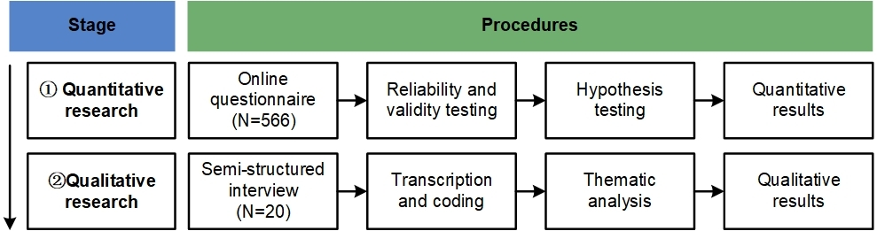

Heritage · 2025 · Co-first author
VR Acceptance in Cultural Heritage
We examined museum VR acceptance among Chinese Generation Z visitors with prior museum VR experience. An online survey and follow-up interviews investigated how usefulness, enjoyment and the experience of cultural content relate to intention to use.
- Survey
- 566 valid responses
- Interviews
- 20 participants
- My role
- Co-first author Study design, analysis & writing
Research question
What makes museum VR worth using?
The Technology Acceptance Model describes how perceived usefulness and ease of use relate to technology adoption. Museum VR also involves enjoyment, cultural content and shared equipment. We extended the model to examine these factors together for Chinese Generation Z visitors with prior museum VR experience.

Study design
An explanatory sequential mixed-methods study: first identify relationships in the survey data, then use interviews to understand participants' experiences behind those patterns.
{kind=link}

Online survey
We recruited people with prior museum VR experience through VR and museum-interest groups. Participants watched a 60-second recording of Mona Lisa: Beyond the Glass before completing the questionnaire. Of 628 responses, 566 passed data-quality checks.
Model testing
A 29-item, seven-point questionnaire measured nine constructs. We assessed reliability and validity, then used covariance-based structural equation modelling in AMOS to test 16 proposed relationships between those constructs.
Follow-up interviews
Twenty survey volunteers took part in online interviews in Mandarin, each lasting 40–60 minutes. Two authors independently coded the transcripts, discussed differences and refined the themes; a third reviewed the thematic structure against the data.
The survey used a common video stimulus, not an on-site headset trial. Mona Lisa: Beyond the Glass was an existing application, not a prototype developed for this study.
Findings
Usefulness and enjoyment were associated with intention to use
Perceived usefulness had the strongest direct association with intention to use in the model (β = 0.556). Enjoyment was also positively associated (β = 0.219); both paths had p < .001. Interviewees described cultural value in terms of understanding, memorable experiences and emotional engagement.
Table 7; Section 5.2.1Ease of use had a more indirect role
The direct path from ease of use to intention was not statistically significant (β = 0.052, p = .332), while its association with usefulness was positive (β = 0.220, p < .001). Interviewees reported initial difficulties with controllers but also described overcoming them with brief guidance.
Table 7; Section 5.2.3Visitors wanted different ways of exploring
Interviewees asked for content suited to their interests and different levels of knowledge. Their social preferences also varied: some wanted shared visits, others preferred solitude, and others wanted to read visitors' reflections without seeing their avatars.
Section 5.2.4Design implications
Develop the cultural content
Connect immersion to the object, story and information visitors want to explore. The findings support attention to narrative and content quality, rather than treating the headset itself as the attraction.
Keep the interaction approachable
Provide brief onboarding and make care of shared equipment visible. A non-significant direct path in this sample is not evidence that usability, discomfort or hygiene can be ignored.
Allow different depths of exploration
Offer choices about content depth and social participation. These are design directions informed by interviews, not interventions whose effectiveness was tested in this study.
My contribution
I contributed to the study's conceptualisation and methodology, undertook the investigation, formal analysis, validation and visualisation, and shared data curation and original-draft writing. Wen Zhong and I are credited as equal contributors in the published article.
Published author contributionsScope of the evidence
The study measures self-reported perceptions and intentions, not learning gains or observed return visits. The cross-sectional sample was recruited in China and already had museum VR experience. Video-based exposure limits conclusions about embodied interaction, cybersickness and on-site conditions; the model estimates do not establish causality.
Limitations: Section 6.3Publication
Journal article · 28 November 2025
Engaging the Next Generation: A Validated Model of VR Acceptance to Inform Design in Cultural Heritage Institutions
Jiaxuan Gong†, Wen Zhong†, Bai Liu, Zhengyang Lu and Feng Wang
Heritage, 8(12), 503 · 2025
† Equal contribution.
Figures 2 and 3 reproduced without alteration from Gong et al. (2025). © 2025 the authors. CC BY 4.0.